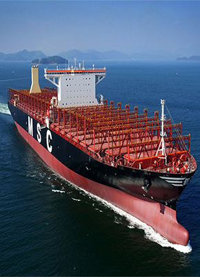
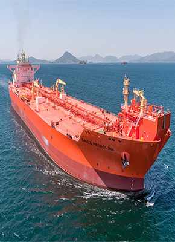
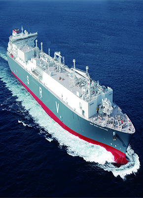

조선사업
“고기술 고부가가치 선박위주의
선별수주로 고수익실현”
-

- LNG선
- 친환경 고효율 엔진으로 LNG선 시장선도View More
-

- 유조선
- 친환경 기술을 자랑하는 원유운반선View More
-

- 부유식 재기화설비
- 재기화설비 강자로 부상View More
-

- 쇄빙유조선
- 극지 원유 운송의 새 지평, 양방향 쇄빙유조선View More
-

- 컨테이너선
- 대형화 주도View More
-

- 초대형 에탄운반선
- 세계 최초 초대형 에탄운반선으로 신시장 개척View More
-

- 여객선
- 유럽형 대형 여객선의 지속적인 개발View More
-
LNG carrier
LNG선
LNG선은 영하 163도로 액화된 천연가스를 운반하는 선박입니다. 2001년에는 기존 대비 운항성능과 연비가 뛰어난 '전기추진 LNG선'을, 2008·2009년에는 세계 최대 크기인 26만6천 입방미터급 LNG선을, 2013년 이후에는 연비를 혁신적으로 개선한 '친환경 고효율 엔진 LNG선'을 각각 성공적으로 건조함으로써 앞선 기술력을 선보였습니다. 또한 LNG선의 핵심기술이라고 할 수 있는 화물창에서는 독자 개발한 한국형 화물창인 KC-1을 실선에 적용하는데 성공하였습니다.
닫기 -
Tanker
유조선
유조선은 원유를 운송하는 원유운반선, 정제과정을 거친 석유제품을 운송하는 정유운반선, 그리고 FPSO 등 해양 생산설비에서 생산한 원유를 육상기지로 운송하는 셔틀탱커가 있습니다. 셔틀탱커는 높은 파도와 바람, 조류의 영향을 받는 해상에서 일정한 위치를 유지하며 원유생산설비에 안정적으로 접안 할 수 있도록 첨단 위치제어 장비가 탑재되어있는 고부가가치 선박입니다.
닫기 -
LNG FSRU
부유식 재기화설비
LNG FSRU는 해상에 정박한 상태로 LNG 운반선으로부터 액화천연가스를 받아 저장하고, 이를 재기화하여 GAS 상태로 파이프라인을 통해 육상 수요처로 공급하는 LNG 수입 터미널입니다. 동남아를 비롯한 LNG 수요 증가로 FSRU 설비 수요 또한 증가하고 있습니다. 또한 당사는 재기화 시스템 국산화를 위하여 독자 기술로 S-Regas를 개발해 수주에 성공하는 등 다양한 재기화 시스템 및 선형 개발로 FSRU시장을 선도하고 있습니다.
닫기 -
Arctic Shuttle Tanker
쇄빙유조선
삼성중공업은 2007년 세계 최초로 7만톤급 극지운항용 전·후진 양방향 쇄빙유조선를 건조하였고 이 후에도 7척을 추가로 수주하는데 성공했습니다. 이 선박은 최대 두께 1.4m의 얼음을 깨고 시속 3.5노트(knot)의 속도로 항해할 수 있으며, 영하 45도의 혹한에서도 견딜 수 있도록 설계됐습니다. 쇄빙유조선은 쇄빙선과 유조선을 하나로 결합하여 운송 효율을 획기적으로 향상시킨 신개념 선박으로 평가받고 있습니다.
닫기 -
Container ship
컨테이너선
삼성중공업은 5,000TEU급 컨테이너선이 주종을 이루던 지난 1999년에 세계 최초로 6,200TEU급 컨테이너선을 개발한 이래, 8,100TEU급(2002년), 9,600TEU급(2003년), 13,300TEU급(2006년), 16,000TEU급(2007년) 선박을 세계 최초로 개발하며 컨테이너선의 대형화를 선도해왔습니다. 2015년에는 20,100TEU급 컨테이너선 4척과 21,100TEU급 컨테이너선 6척을 잇달아 수주하며 세계 최대 컨테이너선 수주 기록을 경신하였습니다.
닫기 -
VLEC
초대형 에탄운반선
에탄운반선은 셰일가스 등 천연가스에서 추출되는 에탄을 액화하여 운반하는 선박입니다. 삼성중공업은 2014년 세계 최초로 87만 입방미터급 에탄운반선을 수주해 신시장 개척에 성공했습니다. 에탄운반선은 운항성능이 뛰어나면서도 친환경적인 고부가가치 선박입니다. 삼성중공업은 셰일가스 개발과 함께 증가할 것으로 예상되는 에탄운반선 시장에서 성공적인 교두보를 마련한 것으로 평가받고 있습니다.
닫기 -
Passenger ships
여객선
삼성중공업은 지금까지 그리스 미노안(Minoan)社, 네덜란드 노포크(Nofork)社, 스웨덴 스테나(Stena)社 등으로부터 총 9척의 여객선을 수주하면서 크루즈선 사업 진출 기반을 착실히 다졌습니다. 또한 2009년에는 국내 최초로 LNG를 연료로 사용해 운항 중 발생하는 질소산화물과 황산화물 배출량을 각각 90% 이상 감축시킨 친환경 여객선을 개발하는 등 친환경 기술 연구에도 앞장서고 있습니다.
닫기